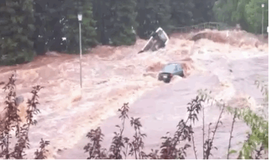
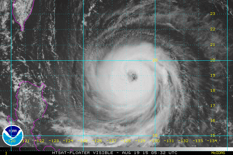
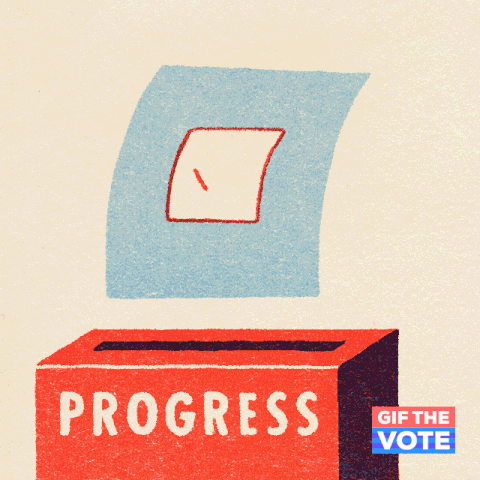

Noticias do dia
Por: Kamily Maia
Boas-vindas, caros leitores! Aqui irei publicar notícias fresquinhas do dia a dia para manter você atualizado.
As principais notícias do dia em um só lugar
Por: Kamily Maia
Boas-vindas, caros leitores! Aqui irei publicar notícias fresquinhas do dia a dia para manter você atualizado.
Por: Kamily Maia
A informação está cada vez mais presente no nosso dia a dia. Por isso, é importante acompanhar notícias e buscar informações de fontes confiáveis para ficar sempre bem informado.

Por: Kamily Maia
Um dos principais objetivos do estudo era entender o impacto na vida dos moradores do Rio Grande do Sul um ano depois da tragédia. Baseados na avaliação das condições da estrutura física dos domicílios após as inundações, foram construídos indicadores que refletiram a gravidade das consequências do evento climático. Foram avaliados como “destruídos” 81 272 domicílios (3,5%) e 190.253 como “muito danificados” (8,2%). Condições de máxima precariedade foram atribuídas a 11,7% dos domicílios. Além do abalo na saúde mental.
Fonte: https://www.cnnbrasil.com.br/

Por: Kamily Maia
O tornado que deixou estragos na cidade de Giruá (RS), na última terça-feira (28/7), pode contribuir para o Brasil quebrar um recorde este ano. Até julho, 81 tornados tinham sido registrados no país em 2026, e isso ainda antes do auge da temporada de tornados, que ocorre geralmente entre o fim do inverno e a primavera. Com um El Niño forte tornando o clima mais propenso à formação de tempestades severas na região Sul do país, o Brasil pode quebrar o recorde de 92 tornados registrados em 2025, segundo dados da Plataforma de Registro e Observadores de Tempestades Severas (Prevots).
Fonte: https://g1.globo.com//

Por: Kamily Maia
Qual o horário da votação? A votação do 1º turno será neste domingo, 4 de outubro, das 8h às 17h (horário de Brasília). Se houver 2º turno, ocorrerá em 25 de outubro, no mesmo horário. Sou obrigado a votar? O voto é obrigatório para quem tem entre 18 e 70 anos e facultativo para os analfabetos, quem tem 16 e 17 anos e os maiores de 70. Para votar em qualquer turno nas Eleições 2026, eleitoras e eleitores devem ter completado 16 anos até 4 de outubro. É preciso estar com o título em situação regular. Preciso levar o título para votar? Quais documentos são aceitos? Para votar, basta levar um documento oficial com foto, inclusive os digitais, como carteira de identidade (RG), carteira de habilitação (CNH), certificado de reservista ou passaporte. O e-Título é aceito se o aplicativo exibir a foto da pessoa (caso do eleitor com biometria). Este ano, o aplicativo poderá ser baixado no dia do pleito. Já a carteira de trabalho só é aceita na versão física, pois a digital não mostra a foto. Por esta razão, as certidões de nascimento ou de casamento também não são aceitas para a votação. Como consultar meu local de votação e minha seção eleitoral? Antes de sair para votar, a eleitora ou o eleitor deve consultar o seu local de votação, pois pode ter havido alguma alteração desde as últimas eleições. A consulta ao local de votação pode ser feita por meio do site do Autoatendimento eleitoral ou pelo aplicativo e-Título. No site, é necessário clicar em “Onde Votar”, menu “Consultas”, preencher os dados solicitados e inserir o código de autenticação do e-Título. Pelo aplicativo, basta fazer login, por meio da biometria e, então, escolher a aba “Onde votar”. É possível copiar o endereço no mapa ou abri-lo em aplicativo de mobilidade para conferir as rotas disponíveis até o local. Vote e faça a diferença.
Fonte: https://www.tre-sp.jus.br/